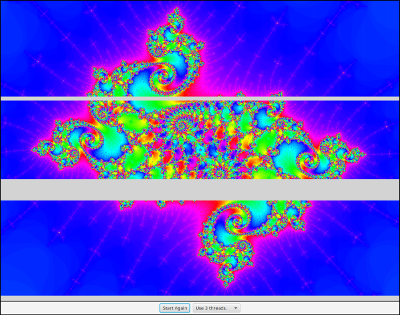

Programming with Threads
Threads introduce new complexity into programming, but they are an important tool and will only become more essential in the future. So, every programmer should know some of the fundamental design patterns that are used with threads. In this section, we will look at some basic techniques, with more to come as the chapter progresses.
Threads versus Timers
One of the most basic uses of threads is to perform some periodic task at set intervals. In fact, this is so basic that there are specialized classes for performing this task—and you've already worked with one of them: the AnimationTimer class, in package javafx.animation, which was introduced in Subsection 6.3.5. An AnimationTimer calls its handle() method periodically, and you can program an animation by overriding that method in a subclass of AnimationTimer. Before timers were introduced, threads had to be used to implement a similar functionality.
Suppose that we wanted to do something similar with a thread. That is, we would like to call some subroutine at periodic intervals, say every 30 milliseconds. The run() method of the thread would have to execute a loop in which the thread sleeps for 30 milliseconds, then wakes up to call the subroutine. This could be implemented in a nested class as follows using the method Thread.sleep() that was discussed in Subsection 12.1.2:
private class MyAnimator extends Thread {
public void run() {
while (true) {
try {
Thread.sleep(30);
}
catch (InterruptedException e) {
}
callSubroutine();
}
}
}To use this class, you would create an object belonging to it and call its start() method. As it stands, there would be no way to stop the thread once it is started. One way to make that possible would be to end the loop when a volatile boolean variable, terminate, becomes true, as discussed in Subsection 12.1.4. A thread object can only be executed once, so in order to restart the animation after it has been stopped in this way, it would be necessary to create a new thread. In the next section, we'll see some more versatile techniques for controlling threads.
There is a subtle difference between using threads and using timers for animation. The thread that is used by a JavaFX AniamtionTimer does nothing but call its handle() routine repeatedly. That method is actually executed in the JavaFX application thread, which also handles repainting of components and responses to user actions. This is important because JavaFX is not thread-safe. That is, it does not use synchronization to avoid race conditions among threads trying to access GUI components and their state variables. As long as everything is done in the application thread, there is no problem. A problem can arise when another thread tries to manipulate components or the variables that are also used in the GUI thread. Using synchronization would be a solution in some cases. The best solution is probably to use an AnimationTimer, if that is possible. But if you really need to use a separate thread, you might be able to use Platform.runLater().
Platform.runLater(r) is a static method in class Platform, from package javafx.application. The parameter is an object of type Runnable, the same interface that is used when creating threads. Platform.runLater(r) can be called from any thread. Its purpose is to submit r to be run on the JavaFX application thread. Platform.runLater(r) returns immediately, without waiting for r to be run; r.run() will be called by the application thread at some future time (which means within a fraction of a second, and perhaps almost immediately, unless the computer is excessively busy). Runnables are executed in the order in which they are submitted. Since the Runnable is called on the application thread, it can safely operate on the GUI, without synchronization. It is often convenient to specify the parameter to Platform.runLater() as a lambda expression of type Runnable. I will use Platform.runLater() in several examples in this chapter and the next.
As an example, the sample program RandomArtWithThreads.java uses a thread to drive a very simple animation. In this example, the thread does nothing except to call a redraw() method every two seconds. The method redraws the content of a canvas. Platform.runLater() is used to execute redraw() on the application thread. The user can click a button to start and stop the animation. A new thread is created each time the animation is started. A volatile boolean variable, running, is set to false when the user stops the animation, as a signal to the thread to stop, as discussed in Subsection 12.1.4. The thread is defined by the following class:
private class Runner extends Thread {
public void run() {
while (running) {
Platform.runLater( () -> redraw() );
try {
Thread.sleep(2000); // Wait two seconds between redraws.
}
catch (InterruptedException e) {
}
}
}
}Recursion in a Thread
One reason to use a separate thread to drive an animation is when the thread is running a recursive algorithm, and you want to redraw the display many times over the course of the recursion. (Recursion is covered in Section 9.1.) It's difficult to break up a recursive algorithm into a series of method calls in a timer; it's much more natural to use a single recursive method call to do the recursion, and it's easy to do that in a thread.
As an example, the program QuicksortThreadDemo.java uses an animation to illustrate the recursive QuickSort algorithm for sorting an array. In this case, the array contains colors, and the goal is to sort the colors into a standard spectrum from red to violet. In the program, the user clicks a "Start" button to start the process. The order of the colors is randomized and QuickSort is called to sort them, showing the process in slow motion. During the sort, the "Start" button changes to a "Finish" button that can be used to abort the sort before it finishes on its own. (It's an interesting program to watch, and it might even help you to understand QuickSort better, so you should try running it.)
In this program, the picture in a Canvas needs to change every time the algorithm makes a change to the array. The array is changed in the animation thread, but the corresponding change to the canvas has to be made in the JavaFX application thread, using Platform.runLater(), as discussed above. Each time it calls Platform.runLater(), the animation thread sleeps for 100 milliseconds to allow time for the application thread to run the Runnable and for the user to see the change. There is also a longer delay, one full second, just after the array is randomized, before the sorting starts. Since these delays occur at several points in the code, QuicksortThreadDemo defines a delay() method that makes the thread that calls it sleep for a specified period.
An interesting question is how to implement the "Finish" button, which should abort the sort and terminate the thread. Pressing this button causes the value of a volatile boolean variable, running, to be set to false, as a signal to the thread that it should terminate. The problem is that this button can be clicked at any time, even when the algorithm is many levels down in the recursion. Before the thread can terminate, all of those recursive method calls must return. A nice way to cause that is to throw an exception. QuickSortThreadDemo defines a new exception class, ThreadTerminationException, for this purpose. The delay() method checks the value of the signal variable, running. If running is false, the delay() method throws the exception that will cause the recursive algorithm, and eventually the animation thread itself, to terminate. Here, then, is the delay() method:
private void delay(int millis) {
if (! running)
throw new ThreadTerminationException();
try {
Thread.sleep(millis);
}
catch (InterruptedException e) {
}
if (! running) // Check again, in case it changed during the sleep period.
throw new ThreadTerminationException();
}The ThreadTerminationException is caught in the thread's run() method:
/**
* This class defines the thread that runs the recursive
* QuickSort algorithm. The thread begins by randomizing the
* hue array. It then calls quickSort() to sort the entire array.
* If quickSort() is aborted by a ThreadTerminationException,
* which would be caused by the user clicking the Finish button,
* then the thread will restore the array to sorted order before
* terminating, so that whether or not the quickSort is aborted,
* the array ends up sorted. In any case, in the end, it
* resets the text on the button to "Start".
*/
private class Runner extends Thread {
public void run() {
for (int i = 0; i < hue.length; i++) {
// fill hue array with indices in order
hue[i] = i;
}
for (int i = hue.length-1; i > 0; i--) {
// Randomize the order of the hues.
int r = (int)((i+1)*Math.random());
int temp = hue[r];
hue[r] = hue[i];
// The last assignment that needs to be done in this
// loop is hue[i] = temp. The value of hue[i] will
// not change after this, so the assignment is done
// by calling a method setHue(i,temp) that will change
// the value in the array and also use Platform.runLater()
// to change the color of the i-th color bar in the canvas.
setHue(i,temp);
}
try {
delay(1000); // Wait one second before starting the sort.
quickSort(0,hue.length-1); // Sort the whole array.
}
catch (ThreadTerminationException e) { // User aborted quickSort.
// Put the colors back into sorted order. The drawSorted()
// method draws all of the color bars in sorted order.
Platform.runLater( () -> drawSorted() );
}
finally {
running = false; // make sure running is false; this is only
// really necessary if the thread terminated
// normally
Platform.runLater( () -> startButton.setText("Start") );
}
}
}The program uses a variable, runner, of type Runner to represent the thread that does the sorting. When the user clicks the "Start" button, the following code is executed to create and start the thread:
startButton.setText("Finish");
runner = new Runner();
running = true; // Set the signal before starting the thread!
runner.start();Note that the value of the signal variable, running, is set to true before starting the thread. If running were false when the thread was started, the thread might see that value as soon as it starts and interpret it as a signal to stop before doing anything. Remember that when runner.start() is called, runner starts running in parallel with the thread that called it.
When the user clicks the "Finish" button, the value of running is set to false as a signal to the thread to terminate. However, the thread might be sleeping when the "Finish" button is pressed, and in that case, the thread has to wake up before it can act on the signal. To make the thread a little more responsive, the program calls runner.interrupt(), which will wake the thread if it is sleeping. (See Subsection 12.1.2.) This doesn't have much practical effect in this program, but it does make the program respond noticeably more quickly if the user presses "Finish" immediately after pressing "Start," while the thread is sleeping for a full second.
Threads for Background Computation
In order for a GUI program to be responsive—that is, to respond to events very soon after they are generated—it's important that event-handling methods in the program finish their work very quickly. Remember that events go into a queue as they are generated, and the computer cannot respond to an event until after the event-handler methods for previous events have done their work. This means that while one event handler is being executed, other events will have to wait. If an event handler takes a while to run, the user interface will effectively freeze up during that time. This can be very annoying if the delay is more than a fraction of a second. Fortunately, modern computers can do an awful lot of computation in a fraction of a second.
However, some computations are too big to be done in event handlers (or in Runnables passed to Platform.runlater()). A solution, in that case, is to do the computation in another thread that runs in parallel with the event-handling thread. This makes it possible for the computer to respond to user events even while the computation is ongoing. We say that the computation is done "in the background."
Note that this application of threads is very different from the previous example. When a thread is used to drive a simple animation, it actually does very little work. The thread only has to wake up several times each second, do a few computations to update state variables for the next frame of the animation, and then arrange for that frame to be drawn. This leaves plenty of time while the animation thread is sleeping between frames for the JavaFX application thread to do any necessary redrawing of the GUI and to handle any other events.
When a thread is used for background computation, however, we want to keep the computer as busy as possible working on the computation. The thread will compete for processor time with the event-handling thread; if you are not careful, event-handling—redrawing in particular—can still be delayed. Fortunately, you can use thread priorities to avoid the problem. By setting the computation thread to run at a lower priority than the event-handling thread, you make sure that events will be processed as quickly as possible, while the computation thread will get all the extra processing time. Since event handling generally uses very little time, this means that most of the processing time goes to the background computation, but the interface is still very responsive. (Thread priorities were discussed in Subsection 12.1.2.)
The sample program BackgroundComputationDemo.java is an example of background processing. This program creates an image that takes a while to compute because it takes some computation to compute the color of each pixel in the image. The image itself is a piece of a mathematical object known as the Mandelbrot set. We will use the same image in several examples in this chapter.
In outline, BackgroundComputationDemo is similar to the QuicksortThreadDemo discussed above. The computation is done in a thread defined by a nested class, Runner. A volatile boolean variable, running, is used to control the thread: If the value of running is set to false, the thread should terminate. The sample program has a button that the user clicks to start and to abort the computation. The difference is that the thread in this case is meant to run continuously, without sleeping. To allow the user to see that progress is being made in the computation (always a good idea), every time the thread computes a row of pixels, it uses Platform.runLater() to copy those pixels to the image that is shown on the screen. The user sees the image being built up line-by-line.
When the computation thread is created in response to the "Start" button, we need to set it to run at a priority lower than the JavaFX application thread. The code that creates the thread is itself running in the event-handling thread, so we can use a priority that is one less than the priority of the thread that is executing the code. Note that the priority is set inside a try..catch statement. If an error occurs while trying to set the thread priority, the program will still work, though perhaps not as smoothly as it would if the priority was correctly set. Here is how the thread is created and started:
runner = new Runner();
try {
runner.setPriority( Thread.currentThread().getPriority() - 1 );
}
catch (Exception e) {
System.out.println("Error: Can't set thread priority: " + e);
}
running = true; // Set the signal before starting the thread!
runner.start();Although BackgroundComputationDemo works OK, there is one problem: The goal is to get the computation done as quickly as possible, using all available processing time. The program accomplishes that goal on a computer that has only one processor. But on a computer that has several processors, we are still using only one of those processors for the computation. (And in fact, in that case the business about thread priority is not all that relevant, because the animation thread and the application thread can run both run simultaneously, on different processors.) It would be nice to get all of the processors working on the computation. To do that, we need real parallel processing, with several computation threads. We turn to that problem next.
Threads for Multiprocessing
Our next example, MultiprocessingDemo1.java, is a variation on BackgroundComputationDemo. Instead of doing the computation in a single thread, MultiprocessingDemo1 can divide the problem among several threads. The user can select the number of threads to be used. Each thread is assigned one section of the image to compute. The threads perform their tasks in parallel. For example, if there are two threads, the first thread computes the top half of the image while the second thread computes the bottom half. Here is a picture of the program nearing the end of a computation using three threads. The gray areas represent parts of the image that have not yet been computed:

You should try out the program. On a multi-processor computer, the computation will complete more quickly when using several threads than when using just one. Note that when using one thread, this program has the same behavior as the previous example program.
The approach used in this example for dividing up the problem among threads is not optimal. We will see in the next section how it can be improved. However, MultiprocessingDemo1 makes a good first example of multiprocessing.
When the user clicks the "Start" button, the program has to create and start the specified number of threads, and it has to assign a segment of the image to each thread. Here is how this is done:
workers = new Runner[threadCount]; // Holds the computation threads.
int rowsPerThread; // How many rows of pixels should each thread compute?
rowsPerThread = height / threadCount; // (height = vertical size of image)
running = true; // Set the signal before starting the threads!
threadsCompleted = 0; // Records how many of the threads have terminated.
for (int i = 0; i < threadCount; i++) {
int startRow; // first row computed by thread number i
int endRow; // last row computed by thread number i
// Create and start a thread to compute the rows of the image from
// startRow to endRow. Note that we have to make sure that
// the endRow for the last thread is the bottom row of the image.
startRow = rowsPerThread*i;
if (i == threadCount-1)
endRow = height-1;
else
endRow = rowsPerThread*(i+1) - 1;
workers[i] = new Runner(startRow, endRow);
try {
workers[i].setPriority( Thread.currentThread().getPriority() - 1 );
}
catch (Exception e) {
}
workers[i].start();
}Beyond creating more than one thread, very few changes are needed to get the benefits of multiprocessing. Just as in the previous example, each time a thread has computed the colors for a row of pixels, it copies that row into the image, using Platform.runLater().
One thing is new, however. When all the threads have finished running, the name of the button in the program changes from "Abort" to "Start Again", and the pop-up menu, which has been disabled while the threads were running, is re-enabled. The problem is, how to tell when all the threads have terminated? (You might think about why we can't use join() to wait for the threads to end, as was done in the example in Subsection 12.1.2; at least, we certainly can't do that in the JavaFX application thread!) In this example, I use an instance variable, threadsRunning, to keep track of how many computation threads are still running. As each thread finishes, it calls a method that subtracts one from the value of this variable. (The method is called in the finally clause of a try statement to make absolutely sure that it is called when the thread ends.) When the number of running threads drops to zero, the method updates the state of the program appropriately. Here is the method that is called by each thread just before terminating:
synchronized private void threadFinished() {
threadsRunning--;
if (threadsRunning == 0) { // all threads have finished
Platform.runLater( () -> {
// make sure GUI state is correct when threads end.
startButton.setText("Start Again");
startButton.setDisable(false);
threadCountSelect.setDisable(false);
});
running = false; // Make sure running is false after the threads end.
workers = null; // Discard the array that holds the threads.
}
}Note that this method is synchronized. This is to avoid the race condition when threadsRunning is decremented. Without the synchronization, it is possible that two threads might call the method at the same time. If the timing is just right, both threads could read the same value for threadsRunning and get the same answer when they decrement it. The net result will be that threadsRunning goes down by one instead of by two. One thread is not properly counted, and threadsRunning will never become zero. The program would hang in a kind of deadlock. The problem would occur only very rarely, since it depends on exact timing. But in a large program, problems of this sort can be both very serious and very hard to debug. Proper synchronization makes the error impossible.